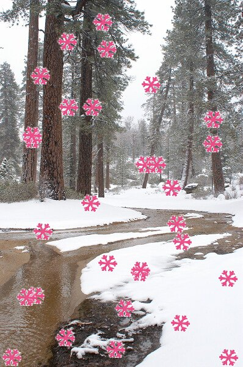

Gimp to wielki powód do dumy ca³ego ¶rodowiska Open Source. Jest jednym z najlepszych graficznych narzêdzi dla Linuxa. Jest to program do tworzenia i obróbki grafiki rastrowej. Równie¿ znakomicie sobie radzi przy tworzeniu obrazków dla stron WWW. Program dzia³a w ¶rodowisku XFree86, choæ istniej± wersjê na inne platformy takie jak MS Windows, Mac etc.Wprowadzenie do Scheme dla u¿ytkowników Gimpa
Spis tre¶ci
- 1. Wstêp
- 2. Podstawy
- 3. Fukcje
- 4. Zmienne
- 4.1. Operacje na zmiennych
- 4.1. Operacje na listach
- 4.3. Tablice
- 5 Pêtle
- 6.Gimpowa PDB
- 7.Rejestrowanie skryptu
- 8. Hello World - prosty skrypcik
- 9. Zaznaczenia
1. Wprowadzenie
Jedn± z ciekawszych w³a¶ciwo¶ci Gimp'a jest fakt i¿ ca³a jego funkcjonalno¶æ mo¿e byæ oprogramowalna. G³ównym jêzykiem u¿ywanym do pisania skryptów w Gimp'ie jest pochodna Lispa - Scheme ( w najbli¿szej przysz³o¶ci ma byæ zast±piony przez jeszcze bardziej okrojony jêzyk - tiny-Fu ). W tej czêsci referatu postaram siê przedstawiæ krótko ten stosunkowo prosty jêzyk programowania. Bêd± to niesetty tylko podstawy, poniewa¿ mimo swej prostoty jêzyk Scheme to do¶æ potê¿ne narzêdzie.
W Scheme tak samo jak w lispie, wszystkie funkcje wywo³ujemy otaczaj±c je nawiasami. Na pocz±tku wyra¿enia podajemy nazwê funkcji, a nastêpnie jej argumenty. Np.: suma 1 i 2 bêdzie wygl±da³a nastêpuj±co:( + 1 2 )gdzie '+' to nazwa funkcji ( suma ), a 1 i 2 to jej argumenty. Wyrazenia takie mozemy dowolnie zagniezdzac np:( + 1 ( - 4 5 ) )oznacza 1 + ( 4 - 5 ) Tzw. "bia³e znaki" ( takie jak spacje czy tabulatory) nie maj± znaczenia .
Poza funkcjami arytmetycznymi, Scheme ( jak ka¿dy porz±dny jêzyk programowania ), ma wiele innncyh. Wszystkie odpalamy analogicznie do operatorow czyli:( funkcja arg1 arg2 ... )Aside from the four arithmetic functions that are represented through the symbols + - * / there are lots of other functions built into the language. All of them have the form(foo param1 param2 ...)W³asne funkcje mo¿emy definiowac za pomoca slowa kluczowego define. Przykladowo wyrazeniem:( define ( kwadrat x ) ( * x x ) )tworzymy funkcjê podnosz±c± liczbê do kwadratu, z której mo¿emy skorzystaæ w sposób nastêpuj±cy:( kwadrat 3 )( a ile to bedzie ?!? ) ;)
Zmienne deklarujemy i ustawiamy za pomoc± s³owa kluczowego set!. Zmienne tak zadeklarowane bêd± globalne, lecz my jako programi¶ci gimpa nie musimy siê tym przejmowaæ ( po ka¿dym uruchomieniu ¶rodowisko samo siê czy¶ci ). A oto i kilka przypisañ:(set! zielony 4352 ) (set! kat_w_radianach ( * 3.141 ( / 60 180 ) ) )Podobnie jak w lispie kluczow± rolê dla jêzyka Scheme maj± listy. Script-fu ( odmiana Scheme któr± bêdziemy siê zajmowaæ ) nie jest wyj±tkiem i równie¿ bardzo mocno wykorzystuje listy, np. przy zapisie liczb w systemie RGB ( red green blue ).'(255 127 0)to na przyk³ad zapis koloru pomarañczowego. Znak ' zawarty przed list± ma kluczowe znaczenie. Oznacza on cytowanie - czyli mówi on imterpreterowi by nie traktowa³ listy jako wywo³anie funkcji 255 ( ;) ), lecz raczej jako lista bêd±ca sta³±.Aby stworzyæ zmienn± nazwan± jako pomarancz z dan± wartosci±, a nastêpnie u¿yæ jej jako t³a piszemy co nastêpuje:
(set! pomarancz '(255 127 0) ) (gimp-set-background-color pomarancz)Uwaga dla programuj±cych w LISP'ie i pochodnych : W Scheme inn± warto¶ci± oznacza siê fa³sz, listê pust± i warto¶æ niezdefiniowan±
Lista, tak jak w lispie sk³ada siê "g³owy" i "ogona". "G³ow±" nazywamy jej pierwszy element, a "ogonem" resztê listy. Dla przyk³adu dla listy '( 127 0 0 ) , g³ow± jest 127, a ogonem lista (!) '( 0 0 ). Funkcja car zwraca nam w³a¶nie "g³owê", cdr "ogon". A oto i przyk³ad u¿ycia wymienionych funkcji:(set! kolor '( 127 0 1 ) ) ( 127 0 1 ) ( car kolor ) 127 (cdr kolor) ( 0 1 )Aby pobrac wartosc niebieskiego dla koloru trzeba sie troszke nameczyc stosujac kombinacje wczesniej poznanych funkcji:( car ( cdr ( cdr ( kolor ) ) ) )Zeby ulatwiæ prace programistom wprowadzono dodatkowe funkcje, takie jak: - cadr - cddr - caddr dziêki którym mo¿na w dosyæ prosty sposób dostaæ sie do odpowiednich elementów. Dla przyk³adu nasza operacja w skrócie wygl±da nastêpuj±co:( caddr kolorW Script-fu funkcje zwracaj± warto¶ci w postaci list, co czyni car jedn± z najbardziej u¿ytecznych funkcji. Np. dla funkcji gimp-new-image czy gimp-new-layer ( które u¿yjemy za chwilê ), warto¶ci± zwracan± jest tylko jeden element, ale poniewa¿ zawiera siê on w li¶cie, dostêp do niego mamy dziêki funkcji car
Bardziej do¶wiadczeni programi¶ci u¿ywaj± zmiennych lokalnych, co jest oczywistym wyborem szczególnie w du¿ych i rozbudowanych funkcji lub w takich w których stosujemy rekurencjê.Zmienne lokalne deklarujemy za pomoc± s³owa kluczowego let* tak jak w nastêpuj±cym przyk³adzie:
(let* ( ( a 5 ) ( b 14 ) ( ( ( * a b ) ) ) )W naszym przyk³adzie zmienne a i b obowi±zuj± tylko w obrêbie nawiasów okal±jacych funkcjê let*
Dostêp do tablic realizowany jest poprzez konstrukcje:(set! tab (cons-array 4 'byte)) (aset a 2 42) (aref a 3)gdzie CONS-ARRAY tworzy tablicê, ASET wpisuje podan± warto¶æ do tablicy, natomiast AREF zwraca zawarto¶æ odpowiedniej komórki tablicy.
Jak ka¿dy sznuj±cy siê jêzyk programowania, Scheme posiada ( co prawda mocno okrojone, ale za to bardzo funkcjonalne instrukcje steruj±ce. Je¶li chodzi o instrukcjê warunkow± to mamy:( if ( warunek ) ( jesli_warunek_spelniony ) ( jesli_warunek_nie_spelniony ))Jedyn± pêtl± obecn± w script-fu jest while. Oto jej sk³adnia:( while ( warunek ) ( dzialanie1 ) ( dzialanie2 ) )
Wszystkie funkcje z jakich mo¿emy korzystaæ, by oprogramowaæ GIMP'a s± dostêpne dziêki tzw. PDB ( procedural database ). Ka¿da z procedur tam zawartych ma odpowienik w postaci funkcji scheme, np:( gimp-image-new 640 480 RGB )tworzy nowy obrazek w gimpie o rozmiarach 640x480 ( s³odkie VGA :) ) z palet± kolorów RGB/Dla przyk³adu procedura gimp-image-new wygl±da nastêpuj±co:
i jak widaæ dostarcza nam wielu cennych informacji takich jak: - parametry - warto¶ci zwracane - autor - etc.
Po tym jak ju¿ uda nam siê napisaæ jak±¶ u¿yteczn± funkcjê ( co uczynimy niebawem ), aby móc jej u¿ywaæ, musimy zarejestrowaæ j± w script-fu. Robimy to za pomoc± funkcji script-fu-reqister. Oto cele rejestrowania funkcji:Ostatni punkt dok³adnke oznacza, ¿e skrypt stanie siê integraln± czê¶ci± Gimpa tak jak komendy wbudowane czy plug-in'y. Tak d³ugo jak bêdzie zarejestrowany bêdziemy go mogli u¿ywaæ z wnêtrza programu. Parametry przyjmowane przez script-fu-register mo¿emy podzieliæ na dwie czê¶ci. Pierwsza to te które zawsze musz± byæ podane. S± to:
- Wybór miejsca zadokowania skryptu w rozwijanych menu Script-fu
- Powiedzenie script-fu jaki typ parametrów skrypt pobiera i nadanie im domy¶lnych warto¶ci
- Zarejestrowanie skryptu w PDB
Poza tym podajemy argumenty jakie przyjmuje skrpyt. Ka¿dy parametr ma trzy atrybuty:
- Nazwa funkcji
- Umiejscowienie w menu.
- Krótki opis funkcji.
- Autor skryptu.
- Licencja.
- Data utworzenia.
- Lista obrazków dla których mo¿e byæ wywo³ywany ten skrypt. Dotyczy to tylko obrazków które ju¿ istniej±.
A oto przyk³ad rejestracji skryptu ( ze wszystkimi mo¿liwymi opcjami ):
Typ argumentu Typ danych Opis SF-IMAGE Warto¶æ ca³kowita (id obrazka) Do pobrania id obrazka SF-DRAWABLE Warto¶æ ca³kowita (id obszaru) Pobranie id obszaru SF-VALUE String Warto¶æ wprowadzona SF-TOGGLE Warto¶æ logiczna (TRUE lub FALSE) Do wprowadzania warto¶ci logicznych SF-PATTERN String (Nazwa patternu) Pozwala wybraæ pattern( deseñ ) SF-ADJUSTMENT Lista (wart-startowa wart-min wart-max maly-krok duzy-krok [int=0 lub float=1] [slider=0 lub roll-box=1]) Tworzy suwak lub okienko do wprowadzania warto¶ci SF-FILENAME String (nazwa pliku) Pozwala wybraæ plik SF-STRING String Do wprowadzania stringów SF-FONT String ( nazwa fonta ) Pozwala wybraæ czcionkê SF-COLOR Lisa (RGB) [0-255] Pozwala wybraæ kolor SF-OPTION Lista stringów Pozwala wybraæ warto¶æ z listy SF-GRADIENT String (nazwa gradientu) Pozwala wybraæ gradient
(script-fu-register "my-demo-box" "/kubek2k/Script-Fu/Demko..." "Do nothing" "Joe User" "Joe User" "August 2000" "" SF-ADJUSTMENT "SF-ADJUSTMENT (slider)" '( 30 1 2000 1 10 1 0) SF-ADJUSTMENT "SF-ADJUSTMENT" '(400 1 2000 1 10 1 1) SF-COLOR "SF-COLOR" '(255 0 255) SF-DRAWABLE "SF-DRAWABLE" 0 SF-FONT "SF-FONT" "" SF-GRADIENT "SF-GRADIENT" "Golden" SF-IMAGE "SF-IMAGE" 0 SF-OPTION "SF-OPTION" '("Option 1" "Option 2" "Option 3") SF-PATTERN "SF-PATTERN" "Wood" SF-STRING "SF-STRING" "Testowy String" SF-TOGGLE "SF-TOGGLE" TRUE SF-VALUE "SF-VALUE" "0" SF-FILENAME "SF-FILENAME" "/")
Jak wiemy umiejscowienie skryptu w menu okre¶la argument 2. W naszym przypadku jest to pasek narzêdziowy, ale mamy te¿ inne mo¿liwo¶ci. Nie podaj±c na pocz±tku ¶cie¿ki specjalnej sekwencji umieszczmy swoje skrypty w g³ównym oknie Gimpa. Mo¿emy te¿ podaæ <Image> co bêdzie oznaczaæ ¿e skrypt bêdzie siê znajdowa³ w menu okienka z obrazkiem ( najlepszy wybór ).
Wklejaj±c co¶ ze schowka resultat nie jest wprowadzany bezpo¶rednio na warstwê, lecz znajduje siê w tzw. warstwie tymczasowej. Mo¿emy sobie manipulowaæ t± warstw± ile tylko chcemy do czasu a¿ nie wkleimy czego¶ nowgo lub jej nie zaktwiczymy ( symbol kotwicy ).
Aby dokonaæ skopiowania zaznaczonego obszaru, u¿ywamy funkcji gimp-edit-copy. Po takiej operacji ca³e zaznaczenie znajdzie siê w buforze który mo¿emy nastêpnie wykorzystaæ, na przyk³ad jako now± warstwê w rysunku.
Pierwszym skryptem który wykonamy bêdzie pro¶ciutki ( tak siê wydaje ) skrypt pisz±cy nam po obrazku dowolny tekst i tworz±cy cieñ dla niego. Rozpiszmy sobie kroki:Teraz nale¿y siê zastanowiæ czy to wszystko ( ;) ) i czy jeste¶my to w stanie uczyniæ bez ingerencji u¿ytkownika. Pierwszy krok wygl±da na prosty - szukamy zatem funkcji która bêdzie w stanie nam pomóc w wypisywaniu tekstu na obrazku i ... znajdujemy ( gimp-text-fontname ). Wygl±da na to ¿e bêdziemy potrzebowaæ: numeru obrazka ( o to zadba program ), umiejscowienia nowej warstwy ( to nie jest a¿ takie istotne ), wielko¶ci i kroju czcionki ( tym zajmie siê u¿ytkownik ). Kiedy ju¿ zwalilismy wiêkszo¶æ pracy na innych ( ;) ) testujemy now± procedurê z pomoc± konsoli ( jest ona osi±galna z menu Dodatki->Script-Fu->Script-Fu console... ).
- Utworznie napisu takiego jaki chcemy
- Stworzenie jego kopii
- cieniowanie z pomoc± kopii
Nastêpnym krokiem który powinni¶my uczyniæ to stworzenie kopii naszego napisu. Pos³u¿ymy siê tu operacj± ( gimp-layer-copy ) - funkcja ta jest stosunkowo prosta - jej wywo³anie polega na podaniu kopiowanej warstwy i kana³u alpha ( to nie jest dla nas istotne ). Niestety brak duplikacji warstw w script-fu zmusza nas do dodania kopii do obrazka. Uwa¿nie szukaj±c odnajdujemy ( gimp-image-add-layer ). Podajmy jej numerek obrazka, warstwy do dodania i pozycjê nowej warstwy.
Super - mamy dwie kopie stworzonego tekstu, ale co z tym zrobiæ? S³uszne pytanie - tutaj musimy pos³u¿yæ siê wrodzonym instynktem i zastanowiæ siê jak cieñ mo¿e wygl±daæ. Autor po przeczytaniu jednego z podrêczników do Gimp'a ( bo sam oczywi¶cie nie by³ na tyle inteligentny by na to wpa¶æ ), dowiedzia³ siê, ¿e jednym z lepszych sposobów na stworzenie efektownego cienia jest wprowadzenie tak zwanego zak³ócenia do obrazka ( ang. noise ). Chc±c to uczyniæ pos³u¿ymy siê tzw. rozmyciem Gaussa ( funkcja ( plug_in_gauss ) ). Nastêpnie chc±c wmówiæ u¿ytkownikowi ¿e znajduje siê w trzecim wymiarze, przesuwamy nieco rozmyta warstwê wzglêdem pierwotnej ( funkcja ( gimp-layer-translate ) ). Dobrze, ale jak ma wygl±daæ taki skrypt?? Oto i on:( define ( hello-world image warstwa text font-size font ) ( let* ( ( nasztext ( car ( gimp-text-fontname image -1 ( / ( car ( gimp-image-width image ) ) 2 ) ( / ( car ( gimp-image-height image ) ) 2 ) text 0 TRUE font-size 1 font ) ) ) ( kopia ( car (gimp-layer-copy nasztext 1 ) ) ) ) ( gimp-image-add-layer image kopia 0 ) ( plug-in-gauss 1 image kopia 3 3 0 ) ( gimp-layer-translate kopia 3 3 ) ( gimp-image-raise-layer image nasztext ) ( gimp-image-merge-down image nasztext 0 ) ( gimp-displays-flush ) ) ) (script-fu-register "hello-world" _"¬ród³o skryptu/Script-Fu/kubek2k/Hello World..." "Wypisuje dowolny tekst i tworzy cien..." "Jakub Janczak" "Jakub Janczak" "January 2005" "" SF-IMAGE "Image" 0 SF-DRAWABLE "Drawable" 0 SF-STRING "Text" "Hello World!!!" SF-VALUE "Font-size" "14" SF-FONT "Fontname" "Arial" )
U¿yte funkcje
wyja¶nienia wymagaj± jeszcze funkcje ( gimp-image-raise-layer ), ( gimp-image-merge-down ) i ( gimp-displays-flush ). Pierwsza odpowiada za wyniesienie warstwy pierwotnej nad rozmyt± ( bez tego nie by³oby efektu ). Druga powoduje scalenie warstw. Trzecia powoduje wy¶wietlenie wszystkich zmian znajduj±cych siê jeszce w buforach wewnêtrznych Gimp'a. A oto i przyk³adowy obrazek wygenerowany skryptem:
Pierwszy z przyk³adów wymazuje co n-ty pikselowy pasek z obrazkaOstatni z przyk³adów kopiuje obrazy ze schowka do aktualnego obrazu w sposób losowy dobieraj±c pozycjê i k±t obrotu
Oto przyk³ad dzia³ania skryptu:
;; ;; Skrypt do wymazywania co n-tej kolumny ;; Jakub Janczak ;; ;; (define (script-fu-wymaz-co-n img drawable n) (gimp-undo-push-group-start img) (let* ( (szer (car (gimp-drawable-width drawable))) (wys (car (gimp-drawable-height drawable))) ( x 0 ) ) ( (while (< x szer ) (gimp-rect-select img x 0 1 wys REPLACE FALSE 0) (gimp-edit-clear drawable) (set! x (+ x n)) ) ) ) (gimp-selection-none img) (gimp-undo-push-group-end img) (gimp-displays-flush) ) (script-fu-register "script-fu-wymaz-co-n" _"<Image>/Script-Fu/moje/Wymaz co n-ta kolumne..." "Wymazuje co n-ta kolumne" "Jakub Janczak" "GNU GPL" "9 sty 2005" "RGB* GRAY* INDEXED*" SF-IMAGE "Image" 0 SF-DRAWABLE "Drawable" 0 SF-ADJUSTMENT "Every Nth Pixel" '(3 2 10 1 1 0 0) ;; ciekawa rzecz - tworzy dosyæ wygodny suwak )'¬ród³o skryptu
U¿yte funkcje:
( gimp-rect-select obraz x y szer wys operacja zmiekcz wsp_zmiekcz ) -worzy zaznaczenie prostok±tne w p (x,y) o wysoko¶ci wys i szeroko¶ci szer. Trzeci argument to typ operacji ( przeciêcie, dodanie, odjêcie ). Czwarty argument jest odpowiedzialny za zmiêkczenie brzegów ( ustawienie go daje ca³kiem ciekawe efekty ).
( gimp-edit-clear obszar ) - czy¶ci zaznaczony obszar
( gimp-selection-none obraz ) - wy³±cza wszelkie zaznaczenia na obrazie
( gimp-displays-flush) pokazuje wszystkie zmiany na obrazkach ( tzw. flush )
Drugi omawiany skrypt tworzy efekt pó³przezroczystej siatki. A oto przyk³ad dzia³ania:Przed:
Po:
Po niewielkich zmianach w skrypcie mo¿emy uzyskaæ jeszcze ³adniejsz± siatkê:
;; ;; Jakub Janczak ;; Tworzy ciekawy efekt pó³przezroczystej siatki na zaznaczonej czêsci obrazka ;; ;; (define (script-fu-grid-overlay img drawable color size) (define (draw-line drawable startx starty endx endy) (let ((line (cons-array 4 'double))) (aset line 0 startx) (aset line 1 starty) (aset line 2 endx) (aset line 3 endy) (gimp-pencil drawable 4 line) )) (gimp-undo-push-group-start img) (let* ((szer (car (gimp-drawable-width drawable))) (wys (car (gimp-drawable-height drawable))) (siatka (car (gimp-layer-new img szer wys RGB-IMAGE "grid" 100 NORMAL-MODE))) (sx 0) (sy 0) ) (gimp-layer-add-alpha siatka) (gimp-image-add-layer img siatka -1) (gimp-rect-select img 0 0 szer wys REPLACE FALSE 0) (gimp-edit-clear siatka) (gimp-palette-set-foreground color) (gimp-brushes-set-brush "pixel (1x1 square)") (while ( > sy wys) (set! sy (+ sy size)) (draw-line siatka 0 sy szer sy) ) (while (> sx szer ) (set! sx (+ sx size)) (draw-line siatka sx 0 sx wys) ) (gimp-layer-set-opacity siatka 25) (gimp-selection-none img) (gimp-undo-push-group-end img) (gimp-displays-flush) ) ) (script-fu-register "script-fu-grid-overlay" _"<Image>/Script-Fu/kubek2k/Dodaj przezroczysta siatke..." "Dodaje przezroczysta siatke" "Jakub Janczak" "Jakub Janczak" "Sty 2005" "RGB* GRAY* INDEXED*" SF-IMAGE "Image" 0 SF-DRAWABLE "Drawable" 0 SF-COLOR _"Color" '(255 255 255) SF-VALUE _"Size" "10")' ¬ród³o skryptu
U¿yte funkcje:
( gimp-layer-new obraz szer wys paleta_warstwy nazwa_warstwy stopien_pokrycia sposób_scalenia ) - tworzy now± warstwê ( wa¿ne aby paleta kolorów warstwy nie by³a bogatsza od palety obrazu ). Stopieñ pokrycia oznacza jak bardzo przezroczytsta bêdzie nowa warstwa.
( gimp-pencil obszar ilosc_wspolrzednych wspolrzedne ) - narzedzie rysuje o³ówkiem po zadanych w 3. parametrze wspó³rzêdnych
( gimp-palette-set-foreground kolor ) - ustawia kolor wype³nienia
( gimp-layer-set-opacity wsp_przezroczystosci ) - ustawia wspó³czynnik przezroczysto¶ci warstwy
Przy okazji zobaczyli¶my jak korzystamy z tablic i funkcji wewnêtrznych w Scheme
Nazwa motylki pochodzi od pierwotnego przeznaczenia skryptu który mia³ symulowaæ nalot chmary motyli ;). Obecnie s³u¿y np. do za¶nie¿ania obrazków ( ¶niegu mamy w tym momencie a¿ zanadto ;) ).

Kod programu:
( define ( motylki image warstwa n ) ( let* ( ( wys ( car ( gimp-image-height image ) ) ) ( szer ( car ( gimp-image-width image ) ) ) ( i 0 ) ) ( while ( < i n ) ( let* ( ( tmp ( car ( gimp-edit-paste warstwa 100 ) ) ) ( wystmp ( car ( gimp-drawable-height tmp ) ) ) ( szertmp ( car ( gimp-drawable-width tmp ) ) ) ) ( gimp-layer-set-offsets tmp ( rand ( - szer szertmp ) ) ( rand ( - wys wystmp ) ) ) ( gimp-drawable-transform-rotate tmp ( / ( rand 180 ) 6.28 ) 1 0 0 0 0 0 3 0 ) ( print i ) ( set! i ( + i 1 ) ) ) ) ( gimp-image-merge-visible-layers image 1 ) ) ) (script-fu-register "motylki" _"<Image>/Script-Fu/kubek2k/Motylki..." "Wrzuca n zaznaczen..." "Jakub Janczak" "Jakub Janczak" "January 2005" "" SF-IMAGE "Image" 0 SF-DRAWABLE "Drawable" 0 SF-VALUE _"Size" "10")¬ród³o skryptu
Jedyne co wymaga wyjasnienia to funkcje:
( gimp-layer-set-offsets ) - funkcja ustalaj±ca oleg³o¶æ warstwy od górnego lewego rogu obrazka
( gimp-image-merge-visible-layers ) - funkcja scala wszustkie widoczne warstwy
To wszystko - mi³ego Gimpowania!!!
Autor: Jakub Janczak. W ramach referatu z przedmiotu Obliczenia Symboliczne prowadzonych w Katedrze Informatyki AGH
Adres orgina³u http://student.uci.agh.edu.pl/~janczak/gimp-scheme/scheme.html